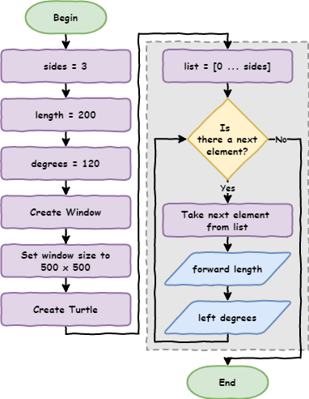
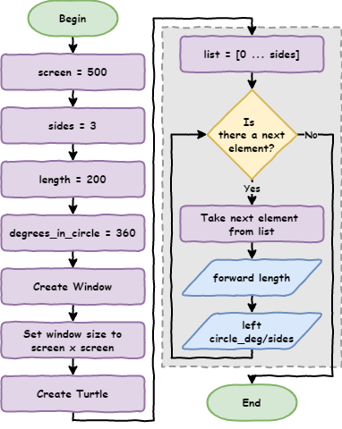
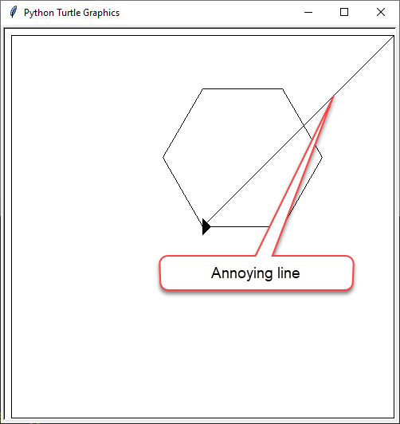
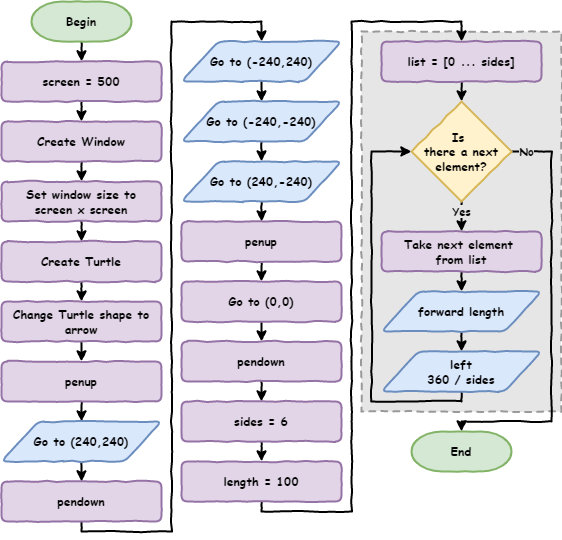

Python Turtle - Lesson 3¶
Part 1: Variables¶
Conventional range¶
Before we start learning about variables, we need to use range in a more common way.
Earlier, we used code like this to print four numbers.
1for index in range(1, 5):
2 print(index)
What is index?
index is a programming convention that represents a counter in a loop. You can call it anything you want, but the convention is to call it index.
When you run the code, this is what you will see.
1
2
3
4
If we only care about how many times the loop repeats, we can use this instead.
1for index in range(0, 4):
2 print(index)
This will give you:
0
1
2
3
The loop still runs four times. The difference is that it starts counting from 0.
If we don’t tell the range function where to start, it will automatically start at 0.
So we can just use this instead.
1for index in range(4):
2 print(index)
This is the most common way to use range in Python.
Replace magic numbers¶
Here is one possible solution for Lesson 2 Exercise 1 (there are many correct answers).
Create a new file called lesson_3_pt_1.py and type in this code.
1import turtle
2
3window = turtle.Screen()
4window.setup(500, 500)
5my_ttl = turtle.Turtle()
6
7for index in range(4):
8 my_ttl.forward(100)
9 my_ttl.left(90)
What do we need to change in the code so the turtle draws a triangle with each side being 200 long?
Try to figure it out yourself before looking at the code below.
1import turtle
2
3window = turtle.Screen()
4window.setup(500, 500)
5my_ttl = turtle.Turtle()
6
7for index in range(3):
8 my_ttl.forward(200)
9 my_ttl.left(120)
What numbers did we change, and what do they mean?
4→3means the number of sides100→200means how long each side is90→120means how many degrees the turtle turns
If you wanted to draw a hexagon, or any other shape, you would have to keep changing these numbers every time.
In programming, these numbers are called magic numbers. A magic number is a value written directly into the code.
Magic numbers are not a good idea. If someone else reads your code, they won’t know what 3, 200, or 120 are for without figuring it out.
Also, imagine your program draws 1000 squares. If you wanted to change them all to triangles, you would have to change numbers 3000 times.
To write better code, we replace magic numbers with names called variables.
A variable is like a labelled box where you store a value, so your code is easier to read and change.
Update your code in lesson_3_pt_1.py so it matches the code below.
1import turtle
2
3sides = 3
4length = 200
5degrees = 120
6
7window = turtle.Screen()
8window.setup(500, 500)
9my_ttl = turtle.Turtle()
10
11for index in range(sides):
12 my_ttl.forward(length)
13 my_ttl.left(degrees)
Predict
Try to guess what will happen when you run the code.
Run
Run the code and check if your prediction was correct.
sides, length, and degrees are all variables. Let’s explore how they are used in the code.
First, here is the flowchart for our updated program:

Investigate
sides = 3creates a variable calledsidesand stores the value3in it.length = 200creates a variable calledlengthand stores the value200in it.degrees = 120creates a variable calleddegreesand stores the value120in it.for i in range(sides):uses the value insides, so it works the same asfor i in range(3):my_ttl.forward(length)uses the value inlength, so it becomesmy_ttl.forward(200)my_ttl.left(degrees)uses the value indegrees, so it becomesmy_ttl.left(120)
Naming rules
Python has some clear rules for naming variables:
names can only use letters, numbers, and
_(underscore)names cannot have spaces
names cannot start with a number
names are case sensitive (for example,
ageis different fromAge)
Single point of truth¶
Now that we are using variables, we can copy the for loop and use it as many times as we want. The values for sides, length, and degrees will always come from what we set at the start.
In programming, this is called a single point of truth. This means if we change the value of sides, it updates everywhere sides is used. The same is true for length and degrees.
Change lesson_3_pt_1.py so it draws a hexagon with each side being 100 long.
Your code should look like:
1import turtle
2
3sides = 6
4length = 100
5degrees = 60
6
7window = turtle.Screen()
8window.setup(500, 500)
9my_ttl = turtle.Turtle()
10
11for index in range(sides):
12 my_ttl.forward(length)
13 my_ttl.left(degrees)
No ‘meat space’ calculations¶
When we made our hexagon, how did we know the turtle needed to turn 60 degrees?
You might have worked it out in your head or used a calculator. Both of these have problems:
you might make a mistake doing it in your head
using a calculator takes extra time
Instead, we can get Python to do the calculation for us.
Python calculations
Python can do lots of different maths calculations for you.
To see them all, check out W3Schools’s Python Arithmetic Operators page
The value for degrees is worked out by dividing 360 by the number of sides.
In Python, we write this as:
degrees = 360 / sides
Let’s add this into our code on line 5:
1import turtle
2
3sides = 6
4length = 100
5degrees = 360 / sides
6
7window = turtle.Screen()
8window.setup(500, 500)
9my_ttl = turtle.Turtle()
10
11for index in range(sides):
12 my_ttl.forward(length)
13 my_ttl.left(degrees)
Remove unnecessary variables¶
Another good habit in programming is to remove variables that we don’t really need.
Do we actually need the degrees variable? Could we just do the calculation inside the for loop instead?
If we remove line 5 and move the calculation to line 10, our code would look like this.
1import turtle
2
3sides = 6
4length = 100
5degrees = 360 / sides
6
7window = turtle.Screen()
8window.setup(500, 500)
9my_ttl = turtle.Turtle()
10
11for index in range(sides):
12 my_ttl.forward(length)
13 my_ttl.left(degrees)
Are there any more magic numbers in the code?
Look carefully and see if you can spot any.
1import turtle
2
3screen = 500
4sides = 6
5length = 100
6CIRCLE_DEG = 360
7
8window = turtle.Screen()
9window.setup(screen, screen)
10my_ttl = turtle.Turtle()
11
12for index in range(sides):
13 my_ttl.forward(length)
14 my_ttl.left(CIRCLE_DEG / sides)
The flowchart for this code now looks like this:

In line 6, we created a new variable called CIRCLE_DEG and gave it the value 360.
We wrote the name in capital letters because this value will never change, no matter what shape we draw.
Variables like this are called constants (values that stay the same).
In Python, we use capital letters to name constants.
Naming conventions
Python has naming rules and naming conventions, and they are not the same.
If you break a naming rule, your program will crash with a syntax error
If you break a naming convention, your program will still work, but your code may be harder to read
We use naming conventions to make code easier for people to understand.
Variable naming conventions
Use clear names that explain what the value is
d = 30→ baddegrees = 30→ betterdegrees_celsius = 30→ best
Use snake case for names with more than one word
use
_instead of spacesonly use lowercase letters
example:
this_is_snake_case
Use ALL CAPITAL LETTERS for constants (values that do not change)
Do not use Python keywords as variable names (like
printorfor)
Part 1 Exercises¶
In this course, the exercises are the make part of the PRIMM model. Work through the exercises and write your own code.
Exercise 1
Download lesson_3_ex_1.py file and save it in your lesson folder.
Read the comments in the code and change it so the turtle draws a square.
The starting code is shown below:
1import turtle
2
3#################################################
4## Change the variable values to draw a square ##
5#################################################
6
7screen = 500
8sides = 6
9length = 100
10
11window = turtle.Screen()
12window.setup(screen, screen)
13my_ttl = turtle.Turtle()
14
15for index in range(sides):
16 my_ttl.forward(length)
17 my_ttl.left(360 / sides)
Exercise 2
Download lesson_3_ex_2.py file and save it in your lesson folder.
Read the comments in the code and change it so the turtle draws a circle.
The starting code is shown below:
1import turtle
2
3#################################################
4## Change the variable values to draw a circle ##
5#################################################
6
7screen = 500
8sides = 6
9length = 100
10
11window = turtle.Screen()
12window.setup(screen, screen)
13my_ttl = turtle.Turtle()
14
15for index in range(sides):
16 my_ttl.forward(length)
17 my_ttl.left(360 / sides)
Exercise 3
Download lesson_3_ex_3.py file and save it in your lesson folder.
Read the comments in the code and change it so the turtle draws a pentagon.
The starting code is shown below:
1import turtle
2
3###################################################
4## Change the variable values to draw a pentagon ##
5###################################################
6
7screen = 500
8sides = 6
9length = 100
10
11window = turtle.Screen()
12window.setup(screen, screen)
13my_ttl = turtle.Turtle()
14
15for index in range(sides):
16 my_ttl.forward(length)
17 my_ttl.left(360 / sides)
Part 2: Coordinates¶
Maintainability¶

Maintainability means how easy your code is for other people to read and understand. This matters because the other person could be:
someone helping you fix your code
your teacher marking your work
even you, coming back to it six months later
Before we continue, we should tidy up the code by using some good coding habits.
We will:
group code based on what it does
use comments to show what each part is for
Change your code in lesson_3_pt_1.py so it matches the code below.
1import turtle
2
3# set up screen
4screen = 500
5window = turtle.Screen()
6window.setup(screen, screen)
7
8# create turtle instance
9my_ttl = turtle.Turtle()
10my_ttl.shape("arrow")
11
12# shape parameters
13sides = 6
14length = 100
15DEGREES_IN_CIRCLE = 360
16
17# draw the shape
18for index in range(sides):
19 my_ttl.forward(length)
20 my_ttl.left(DEGREES_IN_CIRCLE / sides)
Anyone reading the program will be able to quickly find the code for:
setting up the screen
creating the turtle
setting the shape values
drawing the shape
Save the file as lesson_3_pt_2.py (File → Save as…).
How Turtle coordinates work¶
Think of the Turtle window like a piece of graph paper made of pixels.
Our screen is 500 pixels wide and 500 pixels high (px means pixels).
Turtle uses:
xfor left and right (horizontal)yfor up and down (vertical)
So we can say the window size is:
x = 500y = 500
In computing, we write this as a coordinate like this: (500, 500)
The first number is x, and the second number is y.
What’s an immutable tuple?
Values like (500, 500) are called tuples.
A tuple is similar to a list you learnt about earlier, but there is one big difference:
you can change a list
you cannot change a tuple
In computer science, something that cannot be changed is called immutable. So, tuples are immutable.
Tuples:
start with
(end with
)use
,to separate each value
For our Turtle window (500, 500), the coordinates are centred in the middle of the screen.
This means:
xvalues go from-250to250(left to right)yvalues go from-250to250(down to up)
So the centre of the screen is (0, 0).
It looks like this:

Important things to know:
the centre of the screen is
(0, 0)moving up from the centre,
ygets bigger (up to250)moving down from the centre,
ygets smaller (down to-250)moving right from the centre,
xgets bigger (up to250)moving left from the centre,
xgets smaller (down to-250)every spot on the screen can be described using
(x, y)coordinates, like(200, 125)
In summary:¶
↑ increases
y↓ decreases
y→ increases
x← decreases
x
Now that we understand coordinates, we can tell the turtle to move to a specific position on the screen.
Using goto() to draw¶
Make these changes in lesson_3_pt_2.py:
add
my_ttl.goto(0, 125)on line 16add a
#at the start of lines 19 to 21
1import turtle
2
3# set up screen
4screen = 500
5window = turtle.Screen()
6window.setup(screen, screen)
7
8# create turtle instance
9my_ttl = turtle.Turtle()
10my_ttl.shape("arrow")
11
12# shape parameters
13sides = 6
14length = 100
15
16my_ttl.goto(0, 125)
17
18# draw shape
19# for index in range(sides):
20# my_ttl.forward(length)
21# my_ttl.left(360 / sides)
Predict
Try to guess what you think will happen.
Run
Run the code and check if your prediction was correct.
Investigate
Investigate what changed:
line 16my_ttl.goto(0, 125)tells the turtle to move to the positionx = 0andy = 125the
#at the start of lines 19 to 21 turns those lines into comments, so Python ignores them. This is called commenting out code and is useful when testing or fixing your program
Modify
Change the code so your turtle moves to all the points shown in the coordinate diagram above.
Draw a border¶
Change lesson_3_pt_2.py so that it looks like same as below.
1import turtle
2
3# set up screen
4screen = 500
5window = turtle.Screen()
6window.setup(screen, screen)
7
8# create turtle instance
9my_ttl = turtle.Turtle()
10my_ttl.shape("arrow")
11
12# draw boarder
13my_ttl.goto(240, 240)
14my_ttl.goto(-240, 240)
15my_ttl.goto(-240, -240)
16my_ttl.goto(240, -240)
17my_ttl.goto(240, 240)
18my_ttl.goto(0, 0)
19
20# shape parameters
21sides = 6
22length = 100
23
24# draw shape
25for index in range(sides):
26 my_ttl.forward(length)
27 my_ttl.left(360 / sides)
Predict and Run
Try to guess what you think will happen, then run the code. Did it happen the way you expected?
Investigate
Investigate the code by changing parts of it and seeing what happens.
Using penup and pendown¶
Now we have a border around our drawing. There is an extra line where the turtle moves from the centre to the edge, which we don’t want.
We can fix this.

When we write on paper, we lift our pen to move without drawing a line. Then we put it back down to keep writing.
The turtle can do the same thing using penup() and pendown().
Change your code by adding the lines below to lines 13, 15, 19, and 21.
1import turtle
2
3# set up screen
4screen = 500
5window = turtle.Screen()
6window.setup(screen, screen)
7
8# create turtle instance
9my_ttl = turtle.Turtle()
10my_ttl.shape("arrow")
11
12# draw boarder
13my_ttl.penup()
14my_ttl.goto(240, 240)
15my_ttl.pendown()
16my_ttl.goto(-240, 240)
17my_ttl.goto(-240, -240)
18my_ttl.goto(240, -240)
19my_ttl.penup()
20my_ttl.goto(0, 0)
21my_ttl.pendown()
22
23# shape parameters
24sides = 6
25length = 100
26
27# draw shape
28for index in range(sides):
29 my_ttl.forward(length)
30 my_ttl.left(360 / sides)
Predict and Run
Try to guess what you think will happen, then run the code. Did it happen the way you expected?
Here is a flowchart to help you predict what will happen.

Part 2 Exercise¶
In this course, the exercises are the make part of the PRIMM model. Work through the exercise and write your own code.
Exercise 4
Download lesson_3_ex_4.py file and save it in your lesson folder.
Read the comments and use what you know about Turtle to draw a house.
Try to keep your code DRY, which means Don’t Repeat Yourself. This means you should avoid writing the same code again and again when there is a simpler way.
The starting code is shown below:
1import turtle
2
3# set up screen
4screen = 500
5window = turtle.Screen()
6window.setup(screen, screen)
7
8# create turtle instance
9my_ttl = turtle.Turtle()
10my_ttl.shape("arrow")
11
12###################################
13## Using the turtle commands you ##
14## have learnt, draw a house ##
15## made up of several shapes. ##
16###################################